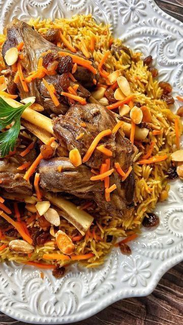

Rinse the basmati rice several times in cold water and soak it for about 30 minutes. Drain before
cooking.
In a large pot, heat 2 tablespoons of oil over medium heat. Add the onions and cook until golden
brown.
Add the lamb pieces and cook until they are browned on all sides.
Stir in the garlic, cumin, cardamom, cinnamon, salt, and pepper. Cook for 2 minutes until fragrant.
Add 3 cups of water, cover, and simmer for 1.5 hours or until the meat is tender.
Meanwhile, in a separate pan, heat the remaining oil and sauté the carrots until slightly soft. Add
the raisins and cook for another 2-3 minutes. Set aside.
Once the meat is cooked, strain the broth and reserve it. Remove the meat and set aside.
In a new pot, bring the reserved broth to a boil. Add the soaked rice and cook until just tender but
not mushy (about 7-10 minutes). Drain any excess water
Layer the meat over the rice and top with the sautéed carrots and raisins (and almonds if using).
Cover the pot tightly with a lid or foil and steam the pilaf on low heat for 20-30 minutes.
Serve hot, garnished with additional raisins and nuts if desired.

This delicious dish was created by Narges
Yaghoubi, the talented chef behind Narcissus Recipe